Agile Team Charter
Project purpose, assigned roles, team values and communication agreements.
Explore Team Charter →CAPE PENINSULA UNIVERSITY OF TECHNOLOGY · PRP372S
Second-Hand Textbook Swap
Agile Digital Portfolio · Project Presentation 3
Litha Owethu Mazibuko
Project Facilitator / Scrum Master
WELCOME
Book Swap SA is a student-focused project designed to help CPUT students discover, buy, sell and exchange affordable second-hand textbooks. It promotes access to academic resources and encourages the reuse of books.
This individual portfolio presents the five Agile artefacts required for Project Presentation 3. Each section contains an explanation, original project evidence and a personal STAR reflection.
My assigned project role was Project Facilitator / Scrum Master.
Project purpose, assigned roles, team values and communication agreements.
Explore Team Charter →Student requirements, the original Sprint 5 Trello user story and tasks.
Explore User Stories →Original Trello evidence covering 54 task cards and seven planned sprints.
Explore Product Backlog →Sprint objectives, selected work, responsibilities and planning evidence.
Explore Sprint Backlog →Dated July and August progress records, challenges and learning.
Explore Agile Logbook →Supporting documents, including the Book Swap SA Brand Guide.
Explore Documentation →The Agile Team Charter established responsibilities. User stories identified student needs. The Product Backlog organised planned work, Sprint Backlogs helped structure that work, and the Agile Logbook documented activities and challenges.
Together, these artefacts strengthened my understanding of teamwork, communication, project facilitation, accountability and continuous improvement.
SECTION 01 · EVIDENCE + REFLECTION
The Agile Team Charter defines our team's shared purpose, assigned responsibilities, working values, communication arrangements and project objectives.
Book Swap SA aims to provide CPUT students with a convenient platform for finding and exchanging affordable second-hand textbooks.
The project encourages the sustainable reuse of academic resources and aims to make textbook discovery more accessible to students.
| Team Member | Assigned Role | Responsibilities |
|---|---|---|
| Litha Owethu Mazibuko | Project Facilitator / Scrum Master | Facilitate stand-ups, support Agile practices, monitor sprint progress and team coordination. |
| Samkelo Mahlangu | Product Owner / Content Lead | Support backlog priorities and ensure requirements reflect student needs. |
| Coben Maistry | Frontend Developer | Develop web interfaces, search functionality and responsive layouts. |
| Angelia Van der Westhuizen | UI/UX and Quality Assurance Lead | Support interface design, usability and testing. |
| Ongeziwe Raqa | Deployment and Documentation Lead | Support GitHub Pages deployment, repository maintenance and documentation. |
Our shared values include respect, transparency, communication, accountability, collaboration and continuous improvement.
These values help promote constructive teamwork and a shared understanding of project responsibilities.
Our charter documents WhatsApp communication, virtual check-ins, weekly progress discussions, GitHub collaboration and Trello task tracking.
Initial goals included a homepage, textbook searching and filtering, a responsive interface and GitHub Pages deployment. Additional improvements such as a wishlist, user guide and administrative functionality were proposed.
These are project goals, not evidence that every proposed feature was implemented.
The original Team Charter provides evidence of the team's agreed roles, communication arrangements and intended development goals.
View Original Agile Team Charter PDF ↗Book Swap SA involved five team members with different responsibilities. Clear working agreements were needed to support collaboration throughout project planning and development.
My assigned responsibility as Scrum Master / Project Facilitator was to support Agile practices, facilitate stand-ups and monitor sprint progress through the logbook.
I reviewed the responsibilities and communication arrangements documented in the Team Charter and considered how these supported progress discussions, task ownership and collaboration.
I learned that Agile leadership requires clear communication, shared expectations and accountability. In future, I would encourage regular charter reviews and clearer records of team decisions and blockers.
This reflection distinguishes my documented responsibilities from activities not independently verified by the charter.
← Back to HomeSECTION 02 · EVIDENCE + REFLECTION
User stories express system requirements from the perspective of the people using the platform. For Book Swap SA, they help connect student needs to planned development work.
The original Trello card was titled: Sprint 5: Day 37 — Develop Search and Filter Functionality.
As a student, I want to search and filter textbook listings so that I can quickly find books that match my academic needs.
The following criteria describe how this functionality could be assessed:
These are proposed assessment criteria. The screenshot alone does not verify that all criteria were implemented or tested.
The following evidence includes the original Sprint 5 Day 37 user story and selected related planning cards.


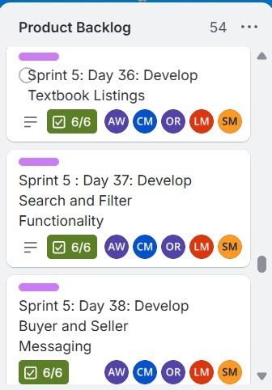
During Sprint 5, a Trello card documented the student requirement for searching and filtering textbook listings. The requirement focused on helping students find books relevant to their academic needs.
As Scrum Master / Project Facilitator, my assigned responsibility was to support clear communication, task coordination and progress visibility within the team.
I reviewed the documented user story and considered how its student-centred goal could be linked to development tasks and acceptance criteria.
I learned that clearly written user stories support task planning, while acceptance criteria help define expected outcomes. In future, I would encourage regular story refinement and evidence-based progress reviews.
SECTION 03 · EVIDENCE + REFLECTION
The Product Backlog provides an organised record of the requirements and activities planned for Book Swap SA.
The team's Trello board contains 54 day-based task cards organised across seven planned sprints.
| Sprint | Focus |
|---|---|
| Sprint 1 | Project initiation and business planning |
| Sprint 2 | Business plan development |
| Sprint 3 | System analysis and design |
| Sprint 4 | UI/UX design and prototype |
| Sprint 5 | Core system development |
| Sprint 6 | Testing and quality assurance |
| Sprint 7 | Finalisation and submission |
These 19 original screenshots document different areas of the Book Swap SA Trello backlog. Click an image to view it at full size.

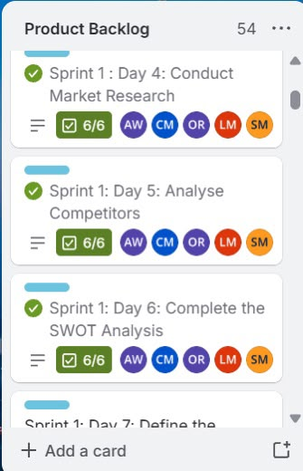
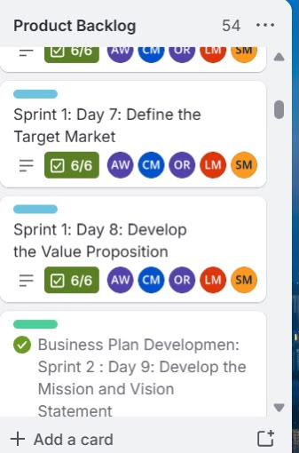

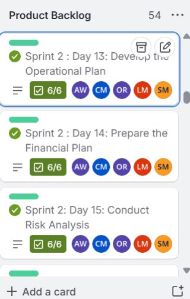
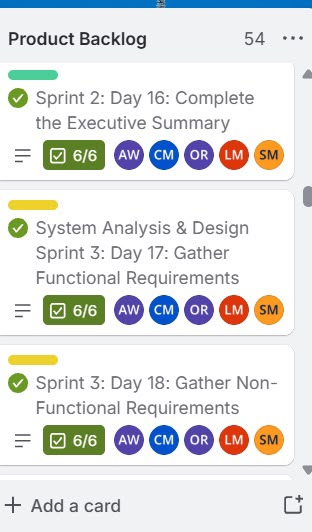
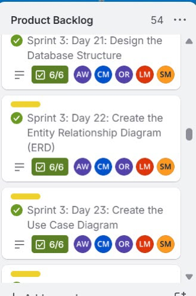

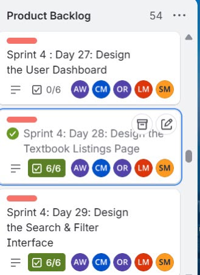


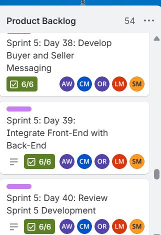
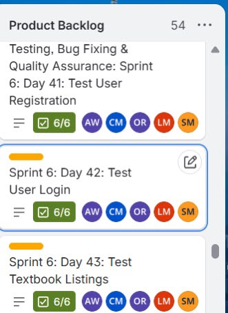
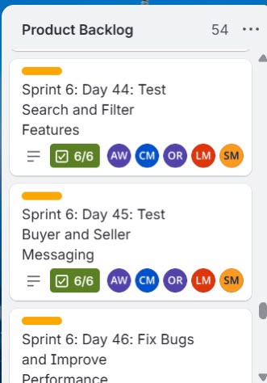


View the Original Book Swap SA Trello Board ↗
Book Swap SA involved multiple planning, design, development and testing activities. The team organised 54 task cards across seven planned sprints.
As Project Facilitator / Scrum Master, my assigned responsibilities involved supporting the Agile process, communication and progress visibility.
I examined the Trello backlog structure and how early planning activities related to later development and testing tasks. I considered the importance of clear task ownership and accurate status information.
I learned that backlog organisation improves transparency and supports effective coordination. In future, I would encourage regular backlog refinement and clearer progress updates.
SECTION 04 · EVIDENCE + REFLECTION
The Sprint Backlog organises work planned for a particular sprint. It helps team members understand the sprint's objectives, activities and assigned responsibilities.
Problem statement, stakeholder identification, market research, competitor analysis, SWOT analysis and value proposition.
Mission, vision, business goals, marketing, operational planning, financial planning and business risk analysis.
Functional requirements, user stories, system architecture, ERD, UML and wireframes.
Homepage, registration, dashboard, textbook listings, search interface, messaging designs and prototype reviews.
Registration, login, user profiles, listings, search and filtering, messaging and integration.
Functional testing, bug fixes, performance improvements and user acceptance testing.
Documentation, presentation, demonstration, final review and submission.
These selected Trello screenshots show activities associated with the seven planned project sprints.
Book Swap SA was organised into seven planned sprints with different objectives, activities and dependencies.
My assigned Scrum Master responsibilities involved supporting coordination, communication and progress monitoring.
I reviewed the sprint-related Trello cards and considered how task ownership, dependencies, blockers and next steps could be monitored within the Agile process.
I learned that effective sprint planning requires realistic goals and clear communication. In future, I would encourage regular progress discussions and documented sprint-review outcomes.
SECTION 05 · EVIDENCE + REFLECTION
The Agile Logbook records dated project activities, planned work, progress discussions, challenges and lessons learned.
The original records cover three reporting periods in July and August 2026.
The original records describe preparation and presentation of the Book Swap SA business proposal.
Challenges included limited preparation time and technical difficulties. The team also discussed feedback and possible improvements.
Records describe discussions of requirements, user stories, backlog refinement, project planning and task distribution.
The activities highlighted the importance of clear responsibilities and realistic task allocation.
Records describe Trello reviews, planning updates, project progress discussions and feedback.
These activities demonstrated the value of monitoring work and keeping responsibilities visible.
The following eight screenshots are the original dated logbook evidence. Click each image for a full-size view.


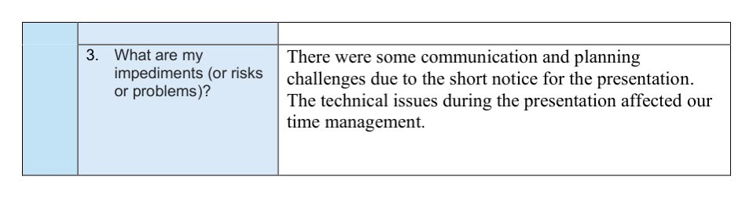
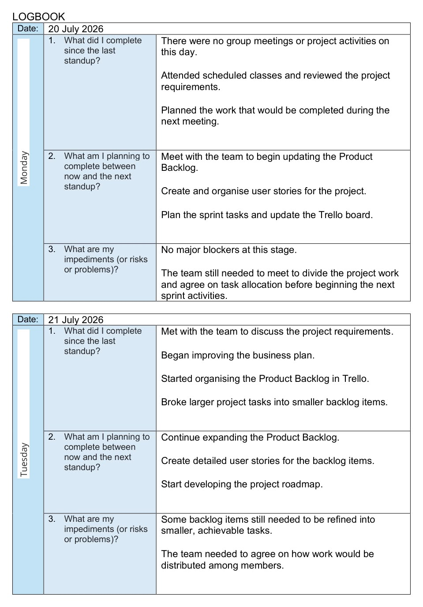


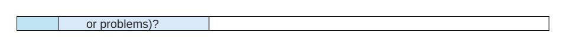
The July and August Agile Logbook entries recorded project presentations, planning activities, progress reviews and challenges.
My assigned role included supporting team communication and monitoring sprint progress through the Agile Logbook.
I reviewed the dated logbook records and compared their activities with planning information from Trello. I identified the importance of documenting activities, blockers and next steps.
I learned that accurate records and regular reviews support transparency and accountability. In future, I would encourage more consistent dated updates and clearer follow-up actions.
SUPPORTING PROJECT MATERIAL
Project documentation helps maintain consistent information about the planning, design and development of Book Swap SA.
These documents support the project but do not replace the five required Agile assessment artefacts.
The Brand Guide documents the intended visual identity of Book Swap SA, including branding, typography, colours and visual presentation.
View Book Swap SA Brand Guide ↗The Brand Guide PDF must be uploaded to the documentation folder for this link to work.
The Brand Guide relates to Sprint 4, which included UI/UX design and prototype development.
Shared visual standards can help team members maintain a consistent appearance across different interfaces.
Sprint 4 included interface design and prototype planning. Consistent visual standards were relevant to these activities.
As Project Facilitator / Scrum Master, my assigned responsibility was to support project coordination.
I connected the Brand Guide to the Sprint 4 design activities and considered how supporting documentation could improve team communication.
I learned that shared documentation supports consistency and collaboration. In future, I would encourage organised and regularly updated project documentation.